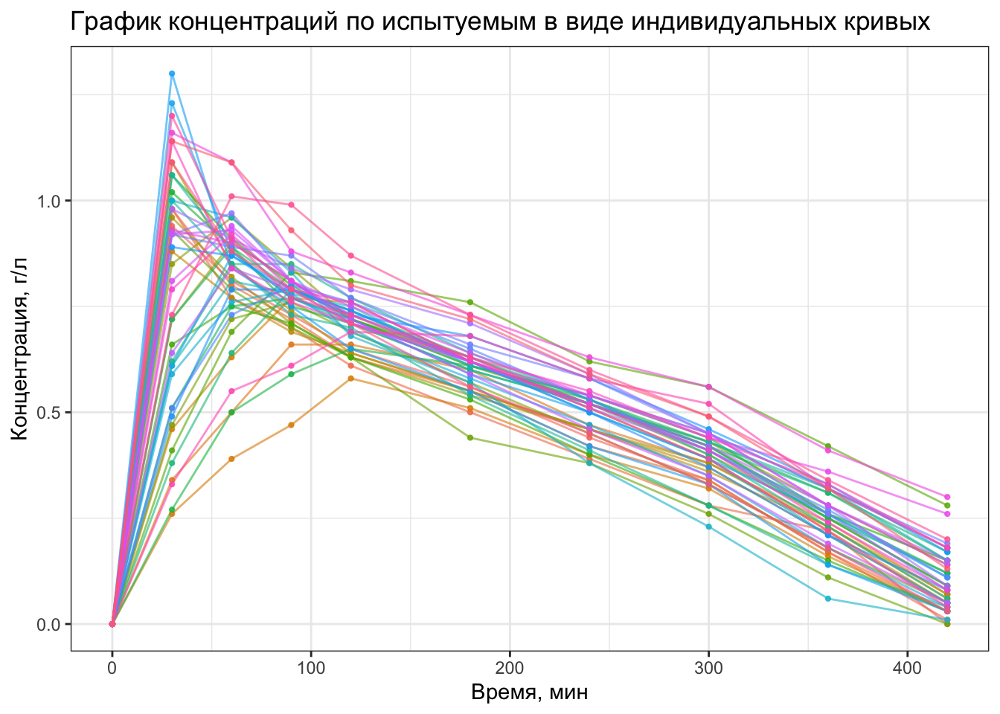
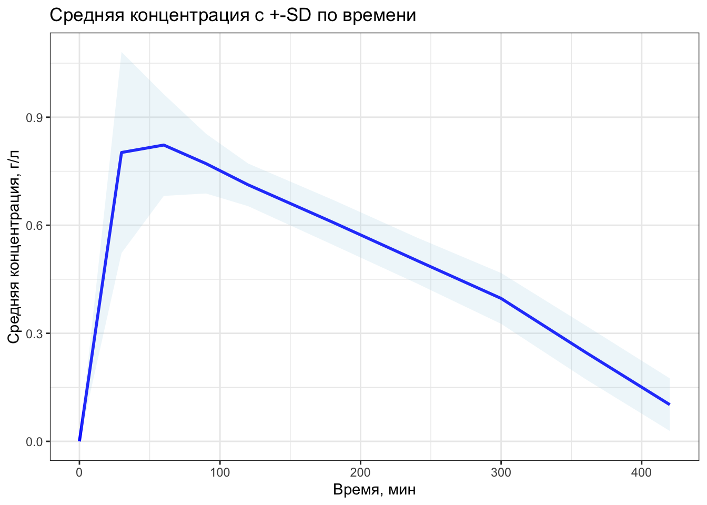
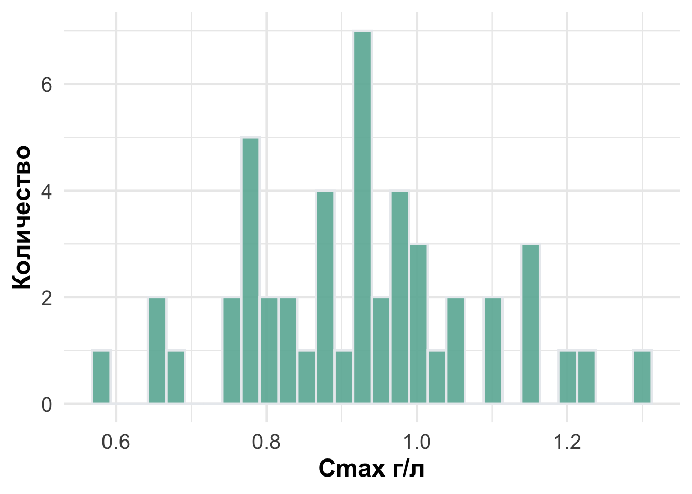
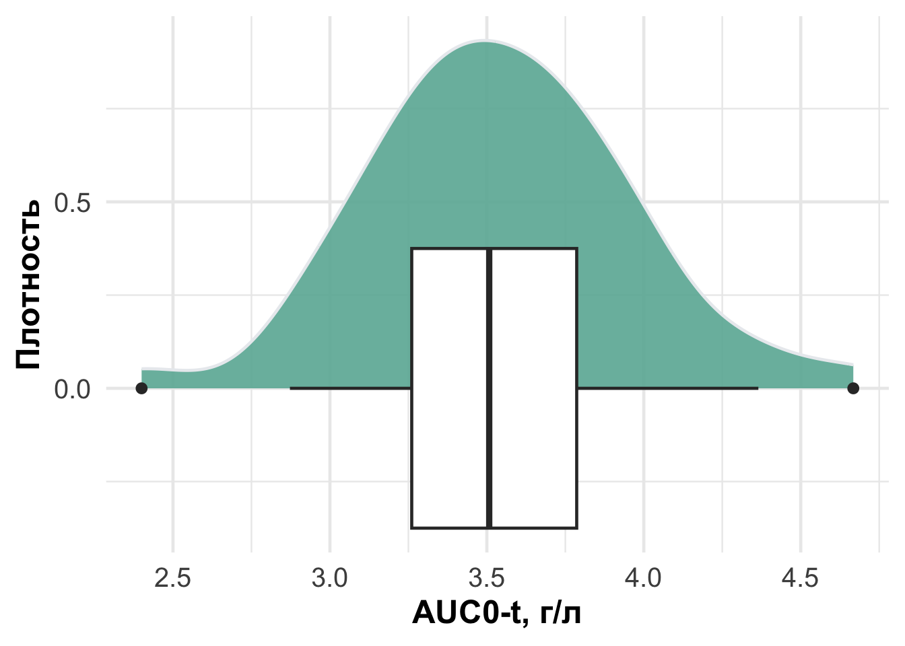
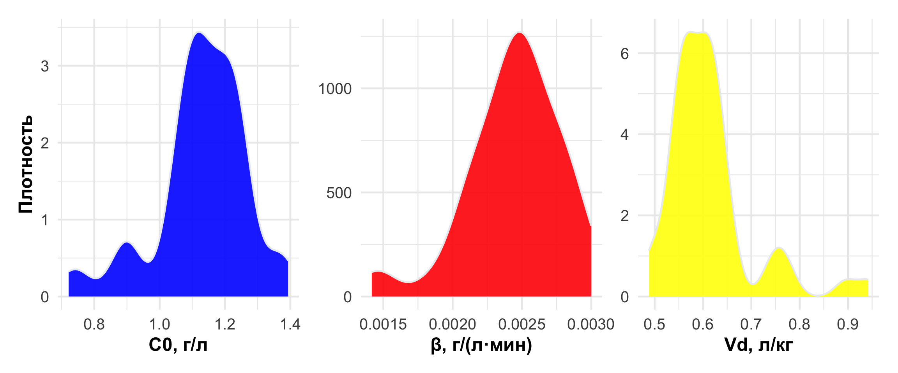

library(tidyverse)
library(tidyplots)
library(readr)
library(patchwork)week_1
Цели и задачи
Визуализация кривых концентрация-время (спагетти-плот)
В виде индивидуальных кривых
В виде среднего +- стандартное отклонение для каждой временной точки
Расчет основных фармакокинетических параметров: Cmax, tmax, AUC0-t , β, Vd
Центральная тенденция (mean, median)
Разброс (sd, coefficient of variation (CV) )
Визуализация выборочных распределений всех параметров из предыдущего пункта с помощью Гистограмм Боксплотов
Интерпретация результатов и короткий отчет
theme_set(
theme_minimal(base_size = 18) +
theme(
plot.title = element_text(face = "bold", size = 20, hjust = 0.5),
axis.title = element_text(size = 18, face = "bold",hjust = 0.5),
axis.text = element_text(size = 15),
legend.text = element_text(size = 14),
legend.title = element_text(size = 15, face = "bold")
)
)Jones_1984 <- read_csv("data/raw/Jones-1984.csv")Rows: 480 Columns: 9
── Column specification ────────────────────────────────────────────────────────
Delimiter: ","
chr (5): study_id, route, food, site, sex
dbl (4): subject_id, time_min, conc_g_per_L, dose_g_per_kg
ℹ Use `spec()` to retrieve the full column specification for this data.
ℹ Specify the column types or set `show_col_types = FALSE` to quiet this message.str(Jones_1984)spc_tbl_ [480 × 9] (S3: spec_tbl_df/tbl_df/tbl/data.frame)
$ study_id : chr [1:480] "Jones_1984" "Jones_1984" "Jones_1984" "Jones_1984" ...
$ subject_id : num [1:480] 1 1 1 1 1 1 1 1 1 1 ...
$ time_min : num [1:480] 0 30 60 90 120 180 240 300 360 420 ...
$ conc_g_per_L : num [1:480] 0 0.94 0.81 0.73 0.65 0.56 0.44 0.34 0.17 0.01 ...
$ dose_g_per_kg: num [1:480] 0.68 0.68 0.68 0.68 0.68 0.68 0.68 0.68 0.68 0.68 ...
$ route : chr [1:480] "PO" "PO" "PO" "PO" ...
$ food : chr [1:480] "fasted" "fasted" "fasted" "fasted" ...
$ site : chr [1:480] "capillary" "capillary" "capillary" "capillary" ...
$ sex : chr [1:480] "male" "male" "male" "male" ...
- attr(*, "spec")=
.. cols(
.. study_id = col_character(),
.. subject_id = col_double(),
.. time_min = col_double(),
.. conc_g_per_L = col_double(),
.. dose_g_per_kg = col_double(),
.. route = col_character(),
.. food = col_character(),
.. site = col_character(),
.. sex = col_character()
.. )
- attr(*, "problems")=<externalptr> skimr::skim(Jones_1984)| Name | Jones_1984 |
| Number of rows | 480 |
| Number of columns | 9 |
| _______________________ | |
| Column type frequency: | |
| character | 5 |
| numeric | 4 |
| ________________________ | |
| Group variables | None |
Variable type: character
| skim_variable | n_missing | complete_rate | min | max | empty | n_unique | whitespace |
|---|---|---|---|---|---|---|---|
| study_id | 0 | 1 | 10 | 10 | 0 | 1 | 0 |
| route | 0 | 1 | 2 | 2 | 0 | 1 | 0 |
| food | 0 | 1 | 6 | 6 | 0 | 1 | 0 |
| site | 0 | 1 | 9 | 9 | 0 | 1 | 0 |
| sex | 0 | 1 | 4 | 4 | 0 | 1 | 0 |
Variable type: numeric
| skim_variable | n_missing | complete_rate | mean | sd | p0 | p25 | p50 | p75 | p100 | hist |
|---|---|---|---|---|---|---|---|---|---|---|
| subject_id | 0 | 1 | 24.50 | 13.87 | 1.00 | 12.75 | 24.50 | 36.25 | 48.00 | ▇▇▇▇▇ |
| time_min | 0 | 1 | 180.00 | 137.62 | 0.00 | 60.00 | 150.00 | 300.00 | 420.00 | ▇▅▅▂▅ |
| conc_g_per_L | 0 | 1 | 0.50 | 0.31 | 0.00 | 0.26 | 0.53 | 0.73 | 1.30 | ▇▆▇▅▁ |
| dose_g_per_kg | 0 | 1 | 0.68 | 0.00 | 0.68 | 0.68 | 0.68 | 0.68 | 0.68 | ▁▁▇▁▁ |
Спагетти-плоты
#Спагетти-плот для каждого пациента
Jones_1984 %>%
ggplot(aes(x = time_min,
y = conc_g_per_L,
group = subject_id,
color = factor(subject_id))) +
geom_line(alpha = 0.6) +
geom_point(size = 0.8, alpha = 0.8) +
labs(x = "Время, мин",
y = "Концентрация, г/л",
color = "Испытуемый",
title = "График концентраций по испытуемым в виде индивидуальных кривых") +
theme_bw() +
theme(legend.position = "none")
# Спагетти-плот каждой временной точки +-SD
Jones_1984 %>%
group_by(time_min) %>%
summarise(
mean_conc = mean(conc_g_per_L),
sd_conc = sd(conc_g_per_L)
) %>%
ggplot(aes(x = time_min, y = mean_conc)) +
geom_line(color = "blue", size = 1) +
geom_ribbon(aes(ymin = mean_conc - sd_conc,
ymax = mean_conc + sd_conc),
alpha = 0.2, fill = "lightblue") +
labs(x = "Время, мин",
y = "Средняя концентрация, г/л",
title = "Средняя концентрация с +-SD по времени") +
theme_bw()Warning: Using `size` aesthetic for lines was deprecated in ggplot2 3.4.0.
ℹ Please use `linewidth` instead.
Расчет основных фармакокинетических параметров: Cmax, tmax, AUC0-t β, Vd
###Считаем Cmax,tmax
#Cmax и tmax
#Берем максимальные значения концентрации и соответствующего времени
pk_cmax_tmax <- Jones_1984 %>%
group_by(subject_id) %>%
summarise(
Cmax_g_per_L = max(conc_g_per_L),
tmax_min = time_min[which.max(conc_g_per_L)]
)
pk_cmax_tmax# A tibble: 48 × 3
subject_id Cmax_g_per_L tmax_min
<dbl> <dbl> <dbl>
1 1 0.94 30
2 2 0.98 30
3 3 0.98 30
4 4 0.66 90
5 5 0.58 120
6 6 0.77 90
7 7 0.88 30
8 8 1.09 30
9 9 0.96 30
10 10 0.9 60
# ℹ 38 more rowspk_cmax_tmax %>%
ggplot(aes(x=Cmax_g_per_L)) +
geom_histogram(fill="#69b3a2", color="#e9ecef", alpha=0.9)+
labs(x = "Cmax г/л", y = "Количество") `stat_bin()` using `bins = 30`. Pick better value `binwidth`.
Считаем AUC0-t: площадь под кривой от 0 до последнего измерения
#AUC0-t
# t Измеряется в часах, переводим
# сумма средних концентраций между двумя точками умноженная на разницы во времени
pk_auc <- Jones_1984 %>%
group_by( subject_id) %>%
arrange(time_min) %>%
mutate(time_h = time_min / 60) %>%
summarise(
AUC0_t_g_h_per_L = sum(
(lead(time_h) - time_h) * (conc_g_per_L + lead(conc_g_per_L)) / 2, #lead берет следующее значение для каждой строки
na.rm = TRUE
),
.groups = "drop"
)
pk_auc# A tibble: 48 × 2
subject_id AUC0_t_g_h_per_L
<dbl> <dbl>
1 1 3.24
2 2 3.07
3 3 3.22
4 4 2.97
5 5 2.4
6 6 3.27
7 7 3.28
8 8 3.43
9 9 3.36
10 10 3.66
# ℹ 38 more rowspk_auc %>%
ggplot(aes(x=AUC0_t_g_h_per_L)) +
geom_density(fill="#69b3a2", color="#e9ecef", alpha=0.9) +
geom_boxplot() +
labs(x = "AUC0-t, г/л", y = "Плотность") 
Посчитаем Vd (объем распределения) и \(\beta\) (константа скорости элиминации)
линейная модель \[ C(t) = C_0 - \beta t \]
#test <- lm(conc_g_per_L~ time_min, data = Jones_1984) проверил чтобы посмотреть как взять коэффициенты
pk_beta_vd <- Jones_1984 %>%
group_by(subject_id) %>%
filter(conc_g_per_L > 0) %>%
slice_tail(n = 3) %>%
group_modify(~ {
fit <- lm(conc_g_per_L ~ time_min, data = .x)
C0 <- coef(fit)[["(Intercept)"]]
beta <- -coef(fit)[["time_min"]]
tibble(
C0_g_per_L = C0,
beta_g_L_per_min = beta,
Vd_L_per_kg = 0.68 / C0
)
}) %>%
ungroup()
p1 <- pk_beta_vd %>%
ggplot(aes(x = C0_g_per_L)) +
geom_density(fill = "blue", color = "#e9ecef", alpha = 0.9) +
labs(x = "C0, г/л")
p2 <- pk_beta_vd %>%
ggplot(aes(x = beta_g_L_per_min)) +
geom_density(fill = "red", color = "#e9ecef", alpha = 0.9) +
labs(x = "β, г/(л·мин)")
p3 <- pk_beta_vd %>%
ggplot(aes(x = Vd_L_per_kg)) +
geom_density(fill = "yellow", color = "#e9ecef", alpha = 0.9) +
labs(x = "Vd, л/кг")
(p1 + p2 + p3) +
plot_layout(axis_titles = "collect") &
labs(y = "Плотность")
Посчитаем базовые статистики
pk_stats_raw <- pk_cmax_tmax %>%
left_join(pk_auc) %>%
left_join(pk_beta_vd) %>%
select(-subject_id) %>%
rename(
C0 = C0_g_per_L,
Cmax = Cmax_g_per_L,
tmax = tmax_min,
AUC0 = AUC0_t_g_h_per_L,
beta = beta_g_L_per_min,
Vd = Vd_L_per_kg
) %>%
summarise(
across(everything(),
list(
mean = ~ mean(.),
median = ~ median(.),
sd = ~ sd(.),
СV = ~ sd(.) / mean(.) * 100
)
)
)
pk_stats <- pk_stats_raw %>%
pivot_longer(
cols = everything(),
names_to = c("parameter", "stat"),
names_sep = "_",
values_to = "value"
) %>%
pivot_wider(
names_from = stat,
values_from = value
) %>%
rename(показатель = parameter)
pk_stats# A tibble: 6 × 5
показатель mean median sd СV
<chr> <dbl> <dbl> <dbl> <dbl>
1 Cmax 0.925 0.93 0.155 16.8
2 tmax 54.4 60 28.1 51.7
3 AUC0 3.54 3.51 0.419 11.8
4 C0 1.13 1.15 0.138 12.2
5 beta 0.00244 0.00250 0.000338 13.8
6 Vd 0.613 0.594 0.0897 14.6Отчет
Среднее и медиана находятся рядом, распределение похоже на нормальное. Вариабельность (CV) у всех показателей кроме tmax относительно небольшая, а вот время достижения макс концентрации tmax очень сильно отличается у большинства.